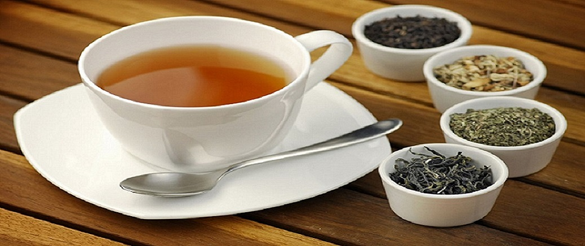
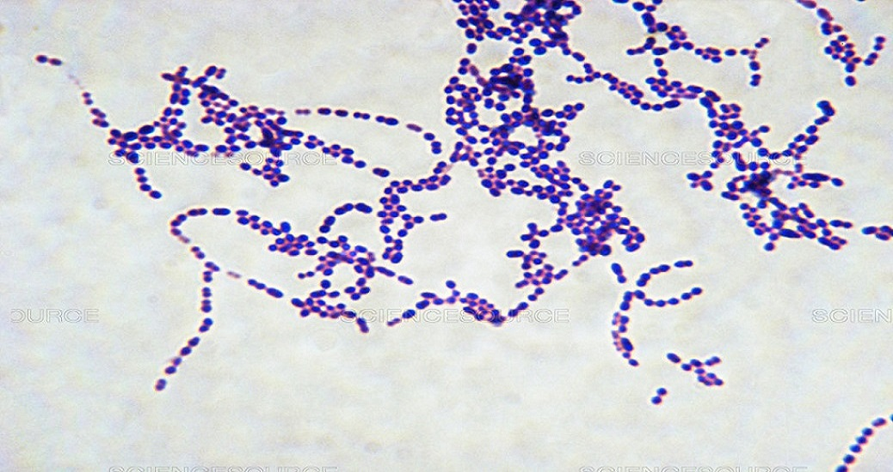

Приветствую! Это главная страница блога.
Здесь вы можете найти статьи о медицине и не только, узнать о интересующих вас вещах и просто весело провести свой досуг. Ниже вы сможете найти и прочитать наши статьи с различной информацией. Подробнее о сайте вы можете узнать в соответсвующих статьях.
Эта статья закреплена

В данной статье разберём несколько основных причин, по которым т-образная бритва лучше, чем кассетный станок, а так-же узнаем немного из истории создания т-образного станка.

Чем оличается зеленый чай от черного? Какой чай полезнее? Вред и польза любимого многими напитка. Давайте разберемся с этими вопросами, а также узнаем, как правильно заваривать и употреблять чай.

Стрептококки - это бактерии паразитирующие на теле человека и животных. Обитают на коже, в кишечнике и в органах дыхания человека. В нашей статье мы разберём, опасны ли они для взрослого человека и для детей?